List Of Picnic Spots
Ranganathittu Bird Sanctuary
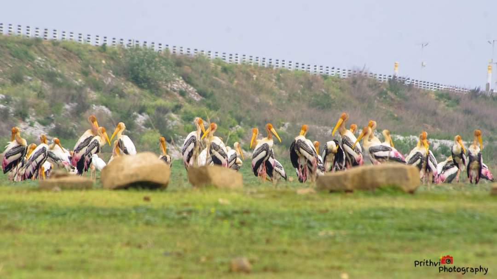
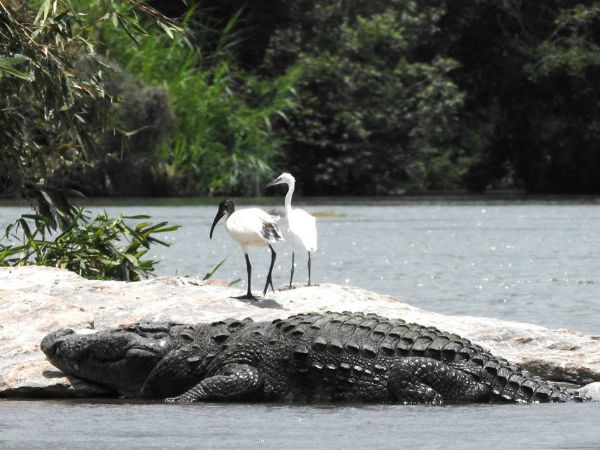
Ranganathittu Bird Sanctuary (also known as Pakshi Kashi of Karnataka), is a bird sanctuary in the Mandya District of the state of Karnataka in India. It is the largest bird sanctuary in the state, 40 acres (16 ha) in area, and comprises six islets on the banks of the Kaveri river.Ranganathittu is located 3 kilometers from the historic town of Srirangapattana and 16 kilometres (9.9 mi) north of Mysore. The sanctuary is currently maintained by the Forest Department of Karnataka and efforts are ongoing to improve the sanctuary, including purchasing nearby private land to expand the protected area.
Location
Mandyada Koppalu - Ramaswamy Dam
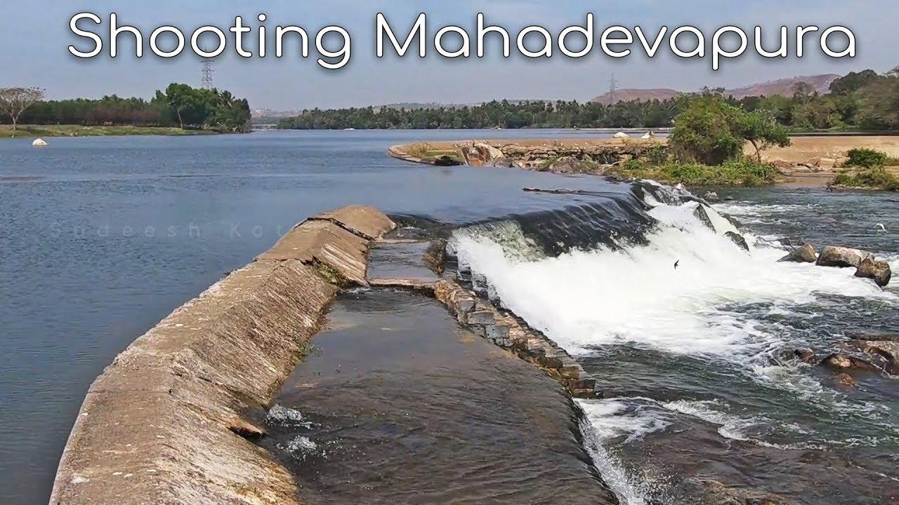
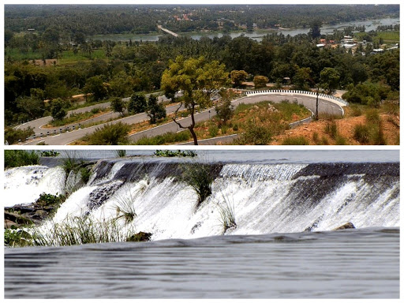
Location
Chunchanakatte Waterfalls
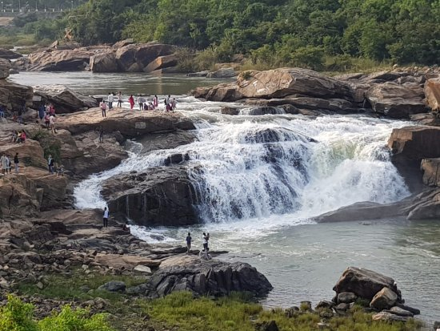
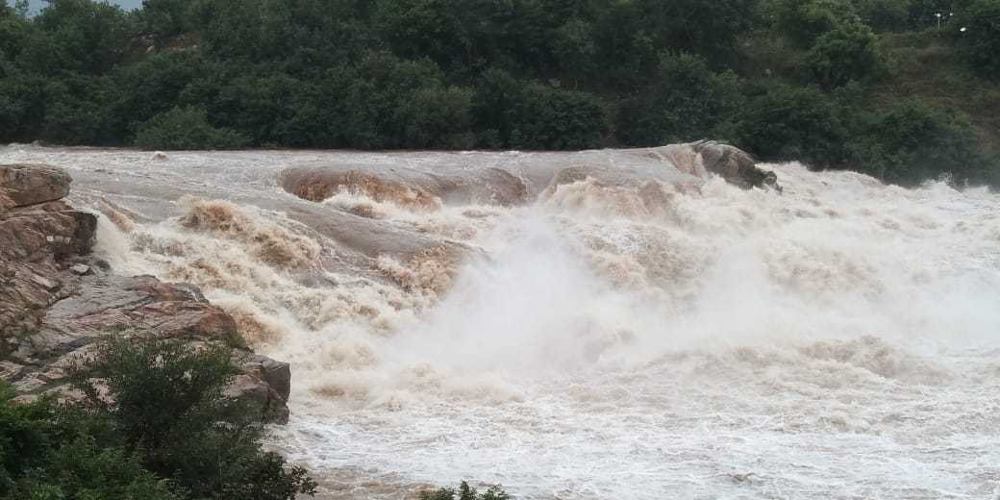
Chunchanakatte Falls (Kannada: ಚುಂಚನಕಟ್ಟೆ ಜಲಪಾತ ಅಥವಾ ಚುಂಚನಕಟ್ಟೆ ಫಾಲ್ಸ್) is a waterfall on the Kaveri River, near the village of Chunchanakatte in krishnarajanagar taluk of Mysore district, Karnataka, India. Water cascades from a height of about 20 meters. It is in the Western Ghats. Here the river falls in two small cascades before joining again to flow as one. The waterfall can be reached by taking a diversion at Krishnarajanagar on the Mysore-Hassan highway. Chunchanakatte is the holy place where Lord Sri Rama during his vanvas stopped by and availed the hospitality of a tribal couple called Chuncha and Chunchi. The significance of this place is that the sound of the powerful falls can be heard all over except inside the sanctum sanctorum of the centuries-old temple, the story goes that Lord Rama was tired of the constant complaining of Sita Mata and gave a curse saying that the tongue of a woman should not be sharp and since Cauvery (river) is considered to be female the noise that the river generated would not be heard in the sanctum sanctorum of the lord. It is also said that when Sita Mata was tired and weary and wanted to have a bath, Lord Ram directed Lakshman to fire an arrow at a rock, once Lakshmana fired the arrow, water in 3 different shades started pouring out, one with turmeric, one with oil and one with shikakai (fruit for hair - natural shampoo). These shades are visible even today when there is considerable amount of water flowing in the falls.
Location
Balmuri Falls
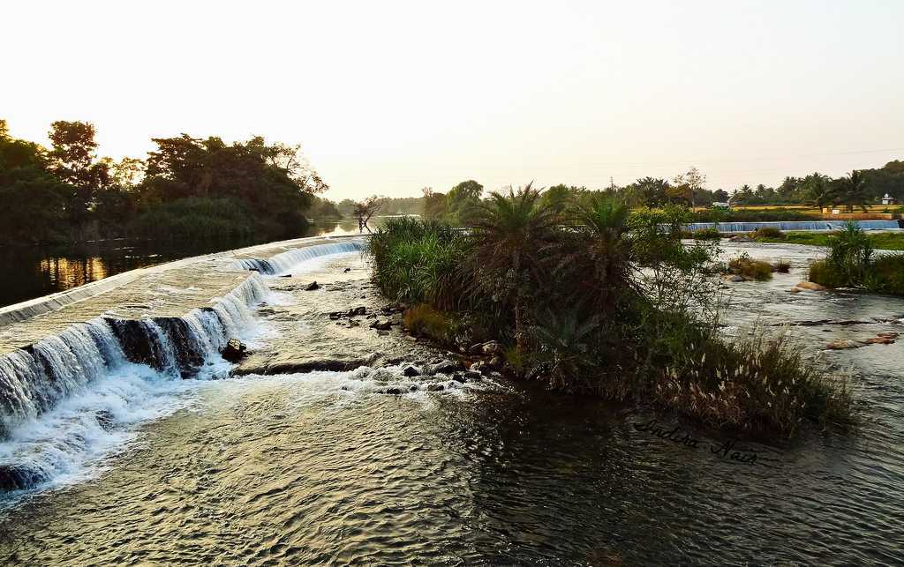
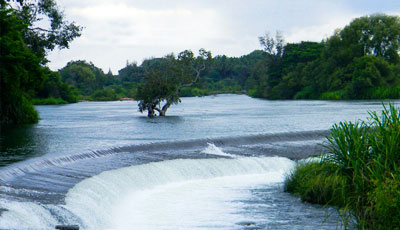
Balmuri falls is a small water cascade located at Srirangapatna in Karnataka. Though known as a waterfall, it is a human-made check dam over the Cauvery river, which allows the water to flow in a 6-foot cascade over the Cauvery. Green coconut palms and trees adorn the shores and the gushing cascade of water sparkle in the sun, which is why the spot is quite scenic where many song sequences in Kannada and a few Hindi films have been shot! Now, isn’t that inviting enough for all you photographers out there to spend a day out wading over the waters and capturing beautiful pictures!
Location
GRS
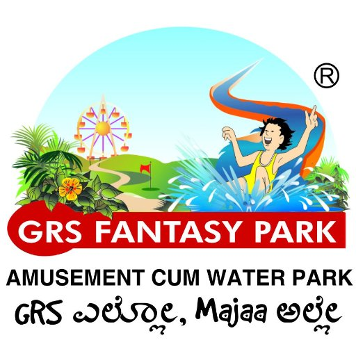
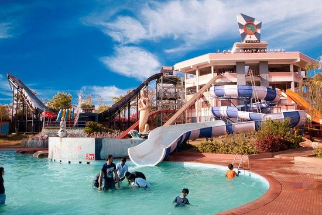
GRS Fantasy Park is one of Mysore city’s favorite tourist destinations. It is an amusement and water park for the entire family! Just 15 minutes drive from the city of Mysore, GRS Fantasy Park is spread across a sprawling 35 acres of lush greenery on the Mysore-Bangalore highway. Mysore’s only Amusement and Water Park, GRS Fantasy Park has served memorable holidays to a countless number of families and people over the past 18 years. Come enjoy the breath taking ambiance and exhilarating array of rides at GRS Fantasy Park. Make your next holiday the one you have always dreamed about.
Adults (above 4'6" in height) - Rs.799.00
Children (3' to 4'6" in height) - Rs.699.00
Infants (below 3') - Free
Senior Citizens (above 65 years) - Rs.699.00
Location
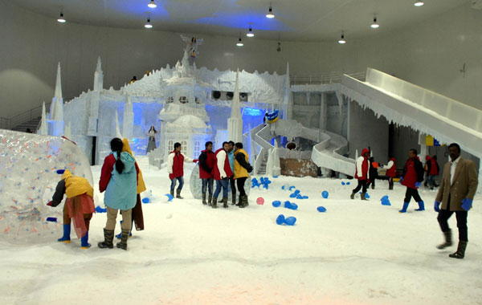
City's first snow park is GRS Snow City. 1 Session is of one hour. Socks is compulsory. -10°C first time in India. It spreads over 12000 SQ.FT. Outside food & beverages not allowed inside the park. Hygenic Jackets, Boots and Gloves are provided to all customers for free.
GRS Snow Park
Adult - ₹449/-
Child - ₹349/-
Location